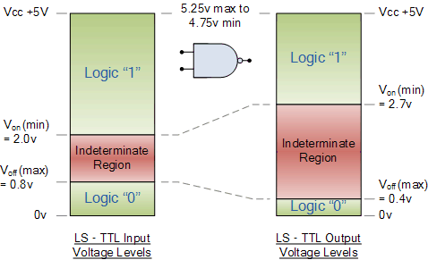

Noise margins in digital systems are not the same as logic thresholds, but to understand noise margins, you have to understand logic thresholds first.
The acceptable ranges of voltages to be interpreted digitally as definitely "Low" or "High" is defined by each IC manufacturer, and standardized for each technology family such as TTL or CMOS.
On the input side, the IC manufacturer guarantees that any voltage less than VIL will be interpreted as "Low" and any voltage greater than VIH will be interpreted as "High". On the output side, the IC manufacturer guarantees that the a "Low" logic result will produce a voltage less than VOL and that a "High" logic result will produce a voltage greater than VOH. Thus each logic level has a tolerance range, which may be different on the input versus output sides of a device. Between the lower and upper specified threshold there is an indeterminate or (forbidden) region. A voltage in the indeterminate range risks being misinterpreted as the incorrect logic level, resulting in a data transmission error.
When a signal is transmitted along a wire from the output of a driver IC to the input of a receiver IC, the signal is susceptible to random unwanted voltage fluctuations caused by electromagnetic interference. Thus, the voltage received on the input may include small random fluctuations superimposed onto the intended, or driven, voltage level. Digital IC's are designed to have some immunity against such interference.
If the acceptable output voltage of the IC driving a wire were exactly equal to the logic threshold voltage on the input side of the IC receiving that signal, then the noise margin would be zero. That is, any noise added to the voltage signal by interference on the wire, could push its voltage across the input threshold and risk misinterpretation of the binary data value.
To allow for some noise margin, we must have VOH > VIH and VOL < VIL. The noise margin is the difference between the input and output voltage thresholds, or Min((VOH - VIH), (VIL - VOL))
